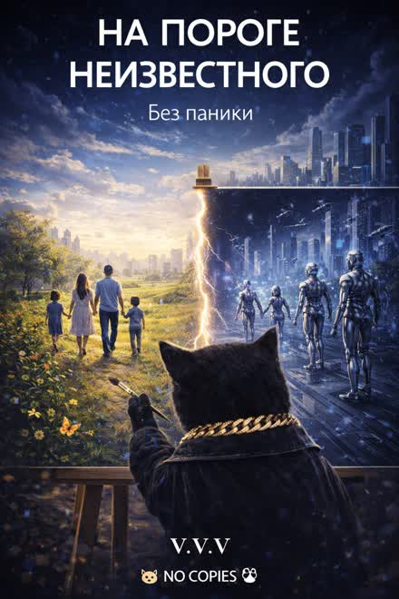
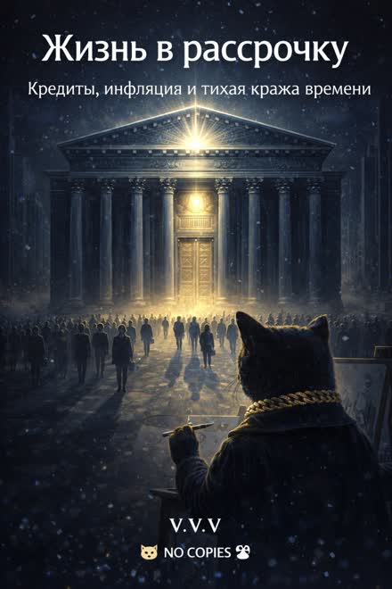
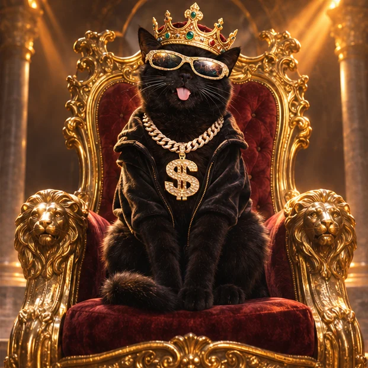

Бабосики для Владосика
Я Владосик. Говорю правду, как я её вижу, и пишу от чистого сердца. Здесь мои книги и музыка S-94. Кот рисует обложки, пишет приложения и делает «Тараканьи бега». Последняя правка от финдиректора — миску для молока побольше.

Музыка
S-94Книги
Все три EPUB можно скачать бесплатно. Книги на русском.

Когда мир разучился быть живым
Двенадцать симптомов эпохи шума, витрины и истощения.
Скачать EPUBGoogle Play
На пороге неизвестного
О том, как технологии и удобство незаметно меняют привычную жизнь.
Скачать EPUBGoogle Play
Жизнь в рассрочку
Кредиты, инфляция и тихая кража времени.
Скачать EPUBGoogle PlayФиндиректор после работы
Поддержать кота
Смета кота
- Жалованье финдиректора
- За обложки и круглосуточный надзор за клавиатурой.
- Молочный резерв
- Одна миска. Финансовый директор проверил её лично. Дважды.
- Служебный самолёт
- Пока бумажный. Испытательный полёт — с края стола.
Одобрено котом
Поддержать кота

Книги и музыка бесплатны. Если хочется угостить финдиректора молоком, можно поддержать проект.
Поддержать через RevolutПоддержка добровольная.